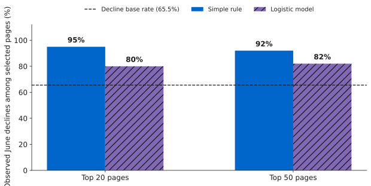
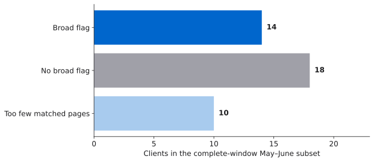
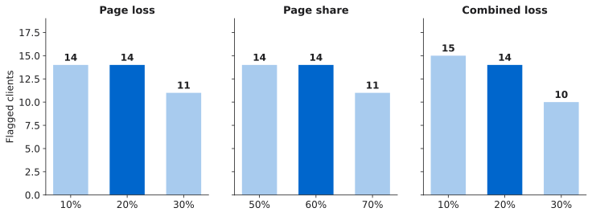

Research paper · FlyRank ML Internship
Before You Refresh
When a page loses search visibility, check whether its neighbors fell too.
Abstract
When many pages for one client lose search visibility together, should an editor check the broader pattern before refreshing individual pages? I use the gated FlyRank warehouse release to compare May search signals with observed June declines and to examine complete May–June page windows by client. On the held-out clients, the simple rule reaches 95% precision among its top 20 pages, compared with 80% for a logistic model, against a 65.5% decline base rate. A separate end-of-June check flags 14 of 32 clients with enough matched pages under the stated broad-drop rule. These observations support a human investigation step before page-level edits, without identifying a decline's cause or measuring refresh effects.
on held-out clients
with enough history
in the broad route
A page drop can be part of a larger drop.
An editor can work through a queue one page at a time. But when many pages for the same client lose visibility together, checking a shared pattern may be the better first step. This study follows the Refresh / Content Opportunity Scoring lane and adds a client-wide check to the page queue. Google Search Central advises checking the scope of a traffic drop across a site, a page group, or one page.
The output is a route for human review, not an automatic edit. A wrong route could waste editorial time or delay investigation of a shared issue. This is an independent internship study; the observed search data cannot diagnose the cause.
The analysis is a May–June slice of a much larger release.
The gated FlyRank warehouse release v20260703 contains 78,835,655 daily rows in the fact_content_daily_performance table. I read the May and June 2026 partitions, not the entire release. An earlier source audit found 6,390 repeated GSC daily rows in this window; their GSC values matched, so the loader keeps one observation per client, page, and day.
The historical check retains 102,532 page-client records across 42 clients with 30 observed days in each window, nonmissing impressions and clicks, and at least 100 May impressions. The end-of-June review queue separately contains 96,678 pages across 44 clients with complete June coverage and at least 100 June impressions.
Thirty days of impressions, clicks, and average position for the page rule and model.
Thirty-day decline label and a separate end-of-June client pattern check.
No later outcome test and no measured refresh effect.
Hashed IDs are used only to join pages and hold clients apart during validation. The fixed 90-day query table is excluded because its recent fields can overlap the June label. GA4 is excluded because early availability varies by client and missing values can be filled with zero. No client names, page URLs, titles, or raw queries appear in the analysis outputs.
First rank pages. Then check the scope.
The prediction task uses five May fields: log impressions, log clicks, click-through rate, average position, and a missing-position indicator. A page receives an observed June decline label when June impressions are more than 20% below May impressions. Missing position is marked separately, so a computational zero is never read as a real ranking position.
The transparent rule prioritizes pages with above-median May impressions, low May CTR, and average position from 11 through 20. Its cutoffs come from training clients. I compare it with scaled logistic regression on the same five inputs. A seeded client-grouped split holds out 11 clients and 10,763 pages; the rule and model are scored on those exact pages. No June value or hashed ID is a model input.
The broad-drop rule · checked at 30 June
At least 30 pages with complete May and June windows; more than 60% of them lose over 20% of impressions; and their combined impressions fall over 20%.
I use the May impression floor for these matched pages. A June floor would drop pages with the steepest falls. This check is descriptive and never enters the May prediction.The simple rule beat the model on this split.
The held-out decline base rate was 65.5%. At the top 20, the rule selected 95% of pages with an observed June decline and the model selected 80%. One rule selection and four model selections did not meet the decline label; that is an error against a search proxy, not proof that those pages need no attention. At the top 50, the values were 92% and 82%. Model accuracy was 63.7%, below the 65.5% majority-class accuracy. I kept the transparent rule for the June review queue.

The broader check changes where a person looks first.
Among the 42 clients with complete-window pages, 32 have at least 30 matched pages. Fourteen meet the broad-drop rule, 18 have enough pages but do not meet it, and 10 have too few pages to classify. In the June queue, 66,716 pages belong to the broad-investigation route, 27,938 to page review, and 2,024 to a coverage check. Eleven of the rule's top 20 June queue pages are in the broad route. All pages remain in the queue.

The flag count moves with the threshold.
Changing one cutoff at a time shows the rule's sensitivity. At page-loss cutoffs of 10%, 20%, and 30%, the flagged counts are 14, 14, and 11. At declining-page shares above 50%, 60%, and 70%, they are 14, 14, and 11. At combined-loss cutoffs of 10%, 20%, and 30%, they are 15, 14, and 10. The 30-page minimum is held fixed in this chart.

A review signal is not a cause or a treatment result.
The model comparison covers one cutoff and one held-out set of clients. The high decline base rate makes top-k precision easier to reach. The 60-day coverage rule and May 100-impression floor exclude newer and smaller pages; clients also contribute very different numbers of pages. The broad thresholds are heuristics, not tuned or validated decisions.
A common decline could reflect demand, indexing, a shared template, measurement, or another factor. Search Console data have privacy filtering and reporting limits. July outcomes are unavailable, so the June queue has no later test. No refresh intervention was measured. The data do not show whether any page edit would improve search performance.
Use the flag to choose the first question.
- 01
Check coverage.
With fewer than 30 complete-window matched pages, gather more history before calling the pattern broad or local.
- 02
Investigate flagged clients.
Check Search Console coverage and indexing, compare clicks and positions, review seasonal demand, and look for shared site or template changes. Record what the evidence supports before editing many pages.
- 03
Review page evidence.
For clients without a broad flag, use the simple queue to select pages. Check accuracy, intent, titles, snippets, relevance, and internal links. A refresh, CTR edit, or no change is a human decision.
- 04
Record and monitor.
Keep the route, decision, and later outcome. Test this rule at another cutoff when data exist; measuring refresh impact needs a separate intervention design.
The calculations are in the notebook.
Open the self-contained capstone notebook, the full report, or the repository. The prior work is in Week 3, Week 5, Week 6, and Week 7.
From a fresh clone, install requirements.txt and ipykernel, open the notebook in VS Code, and run all cells. Access to the gated release and a Hugging Face read token are needed for a first run. The token comes from the HF_TOKEN environment variable or a hidden prompt. DuckDB reads only May and June partitions with a 1 GB memory limit and two threads; local page-level caches are ignored by Git. The grouped split and model both use seed 42.
The repository contains code, this article, and aggregate figures. It does not redistribute the gated page-level data.
Acknowledgments and data credit
Built on the FlyRank ML Internship dataset. The gated warehouse release provides the data. Google Search Central's traffic-drop guide informed the scope question; it does not endorse this rule. Thanks to the internship materials for the data-access and public-safety framework.